TodayWeather / TodayAir — screen evidenceTodayWeather / TodayAir screen evidence
Current web source in an iOS WKWebView test shell · 2026-09-23 · Korean / light theme.
Synthetic weather and warning data. These are not production observations or complete Cordova integration tests.
Screen definitions · Provenance and limits · Manifest
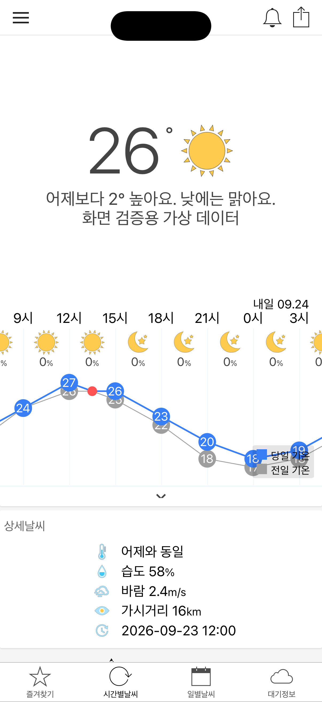
baseline · Full-screen safe-area riskiPhone 17 Pro · iOS 26.5
screenshot-weather-basic.json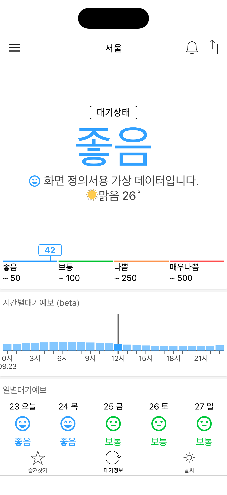
S16 · TodayAir airiPhone 17 Pro · iOS 26.5
screenshot-weather.json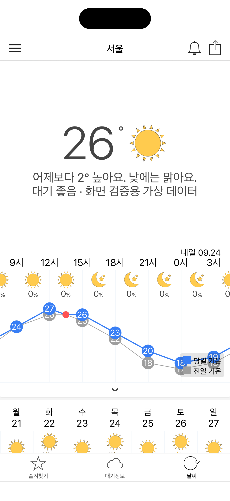
S15 · TodayAir combined weatheriPhone 17 Pro · iOS 26.5
screenshot-weather.json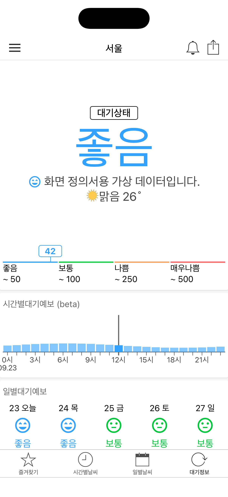
S05 · Air qualityiPhone 17 Pro · iOS 26.5
screenshot-weather.json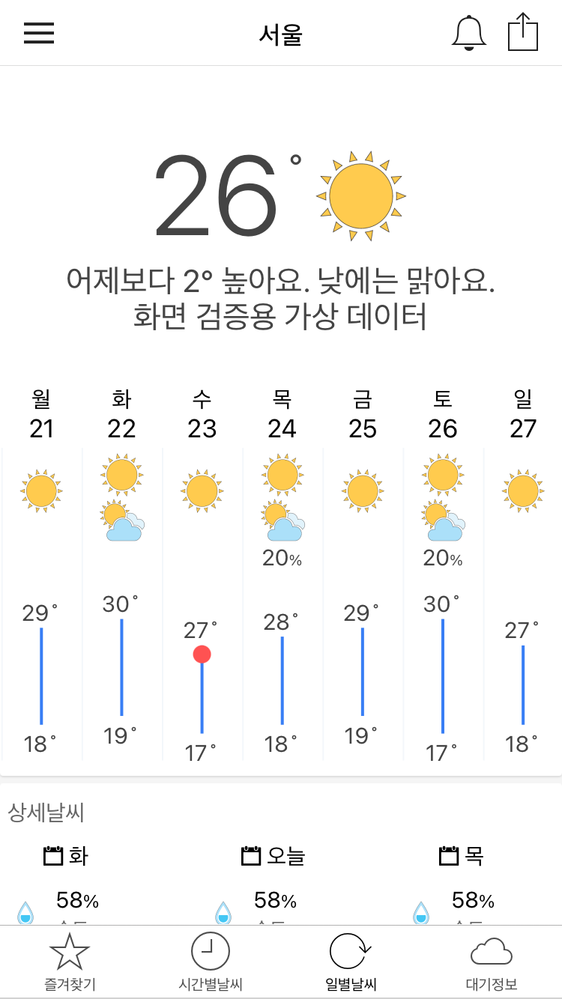
S04 · Daily weather — compactiPhone SE (3rd generation) · iOS 18.6
screenshot-weather-basic.json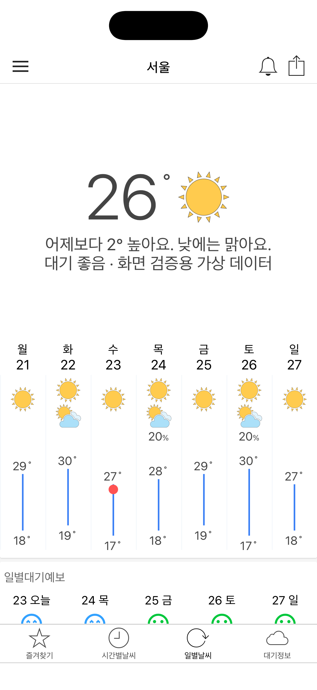
S04 · Daily weatheriPhone 17 Pro · iOS 26.5
screenshot-weather.json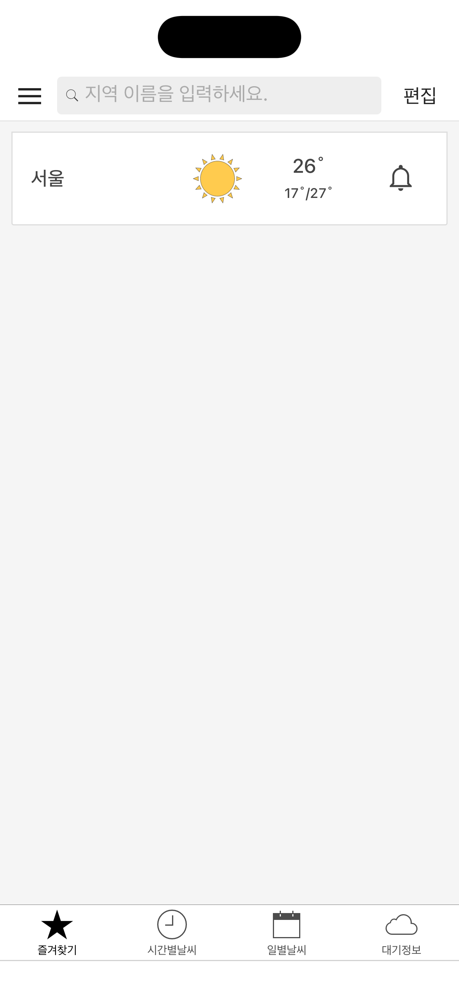
S02 · Saved locationsiPhone 17 Pro · iOS 26.5
screenshot-weather.json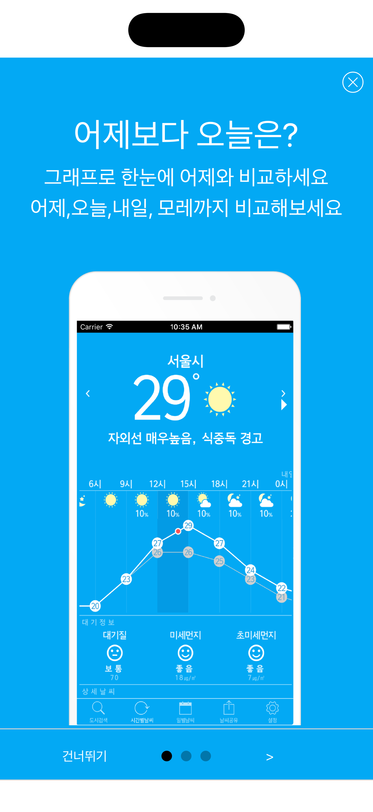
S14 · Legacy guideiPhone 17 Pro · iOS 26.5
bundled historical guide artwork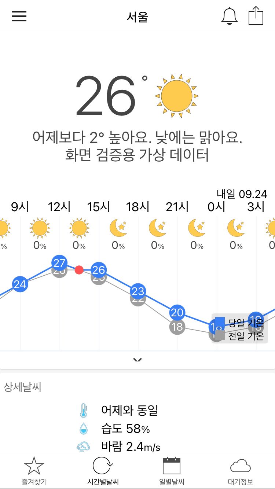
S03 · Hourly weather — compactiPhone SE (3rd generation) · iOS 18.6
screenshot-weather-basic.json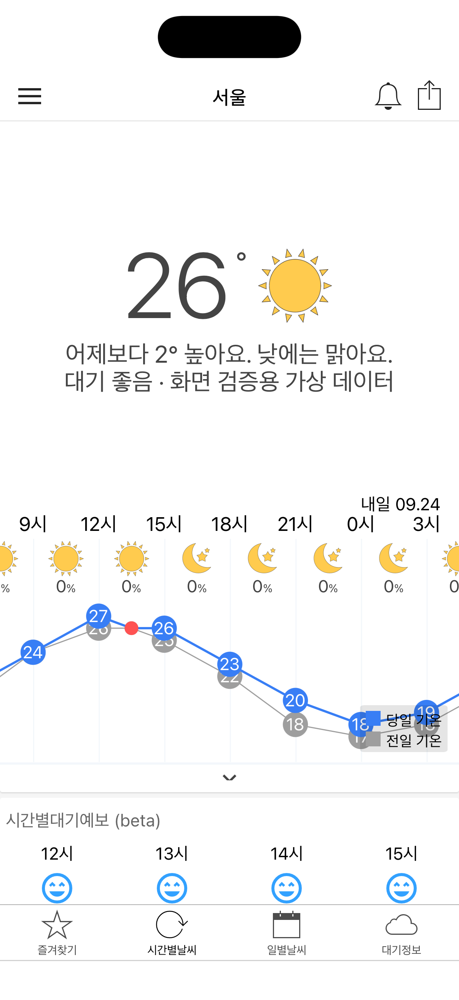
S03 · Hourly weatheriPhone 17 Pro · iOS 26.5
screenshot-weather.json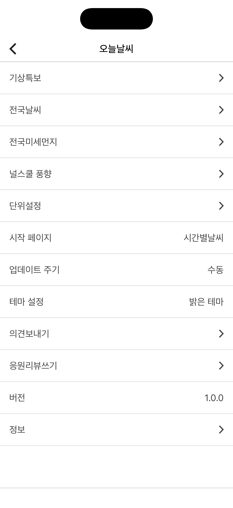
S06 · Menu and settingsiPhone 17 Pro · iOS 26.5
local settings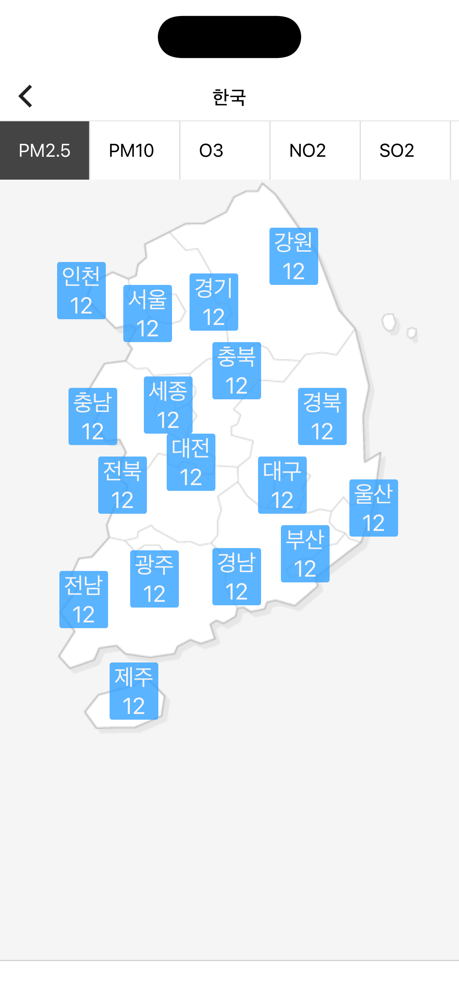
S11 · National airiPhone 17 Pro · iOS 26.5
screenshot-nation.json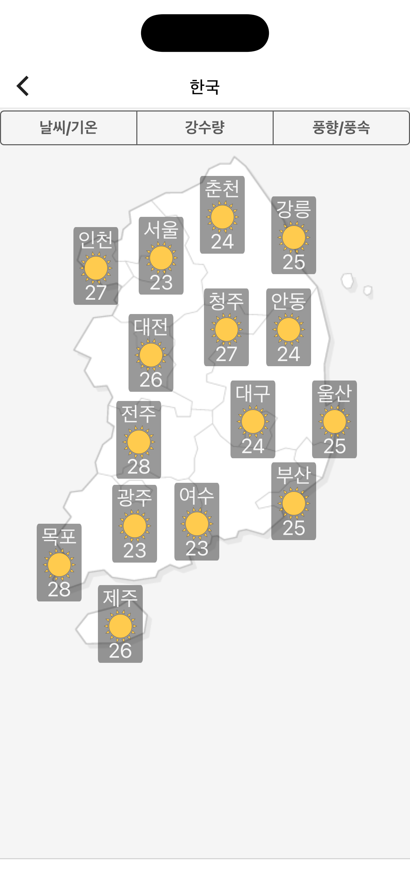
S10 · National weatheriPhone 17 Pro · iOS 26.5
screenshot-nation.json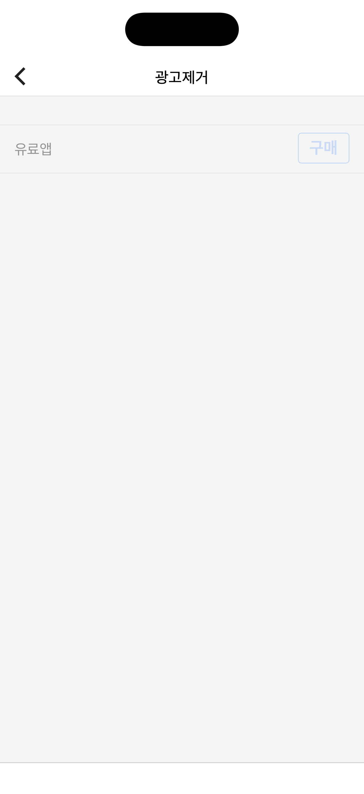
S13 · Purchase plugin unavailableiPhone 17 Pro · iOS 26.5
no store plugin or product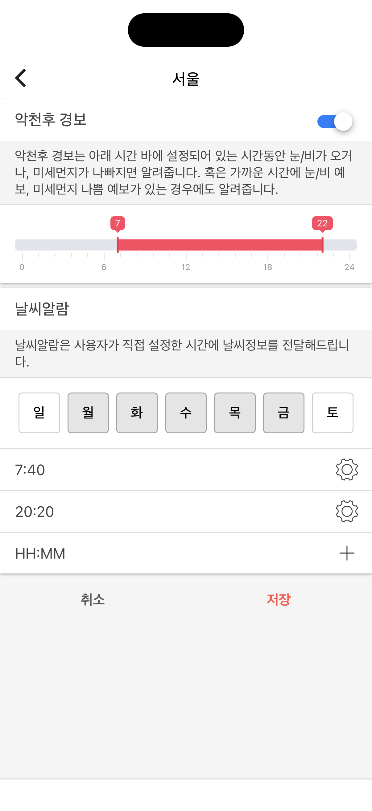
S09 · Notification settingsiPhone 17 Pro · iOS 26.5
local default form; no submission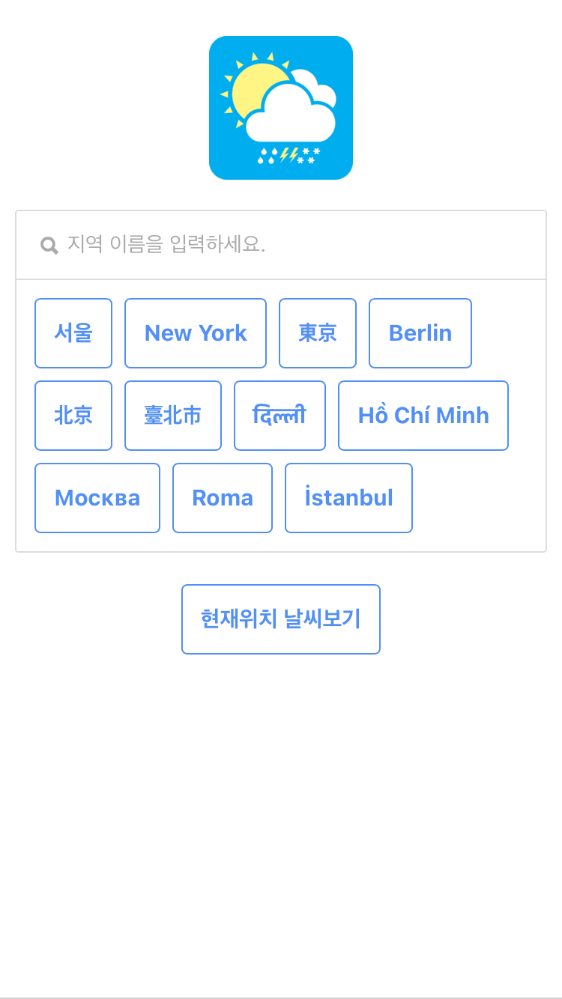
S01 · Initial selection — compactiPhone SE (3rd generation) · iOS 18.6
built-in city list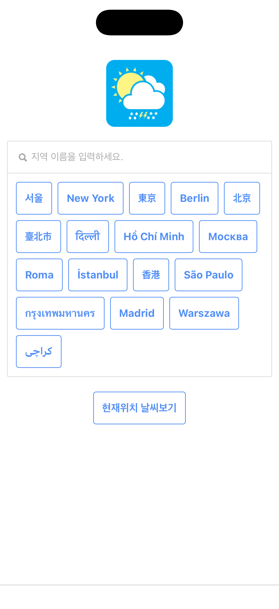
S01 · Initial location selectioniPhone 17 Pro · iOS 26.5
built-in city list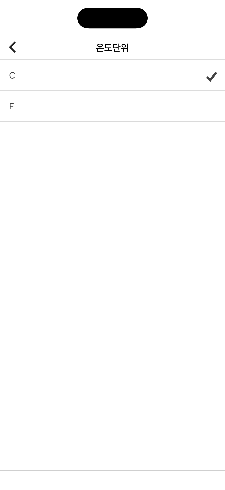
S08 · Temperature choiceiPhone 17 Pro · iOS 26.5
radioList from Units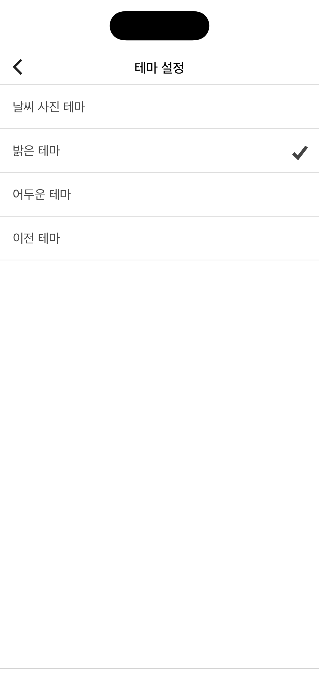
S08 · Theme choiceiPhone 17 Pro · iOS 26.5
radioList from SettingCtrl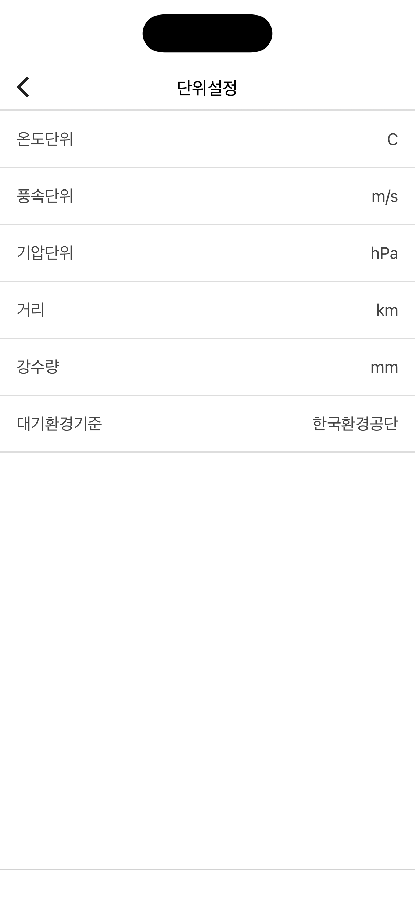
S07 · UnitsiPhone 17 Pro · iOS 26.5
local unit defaults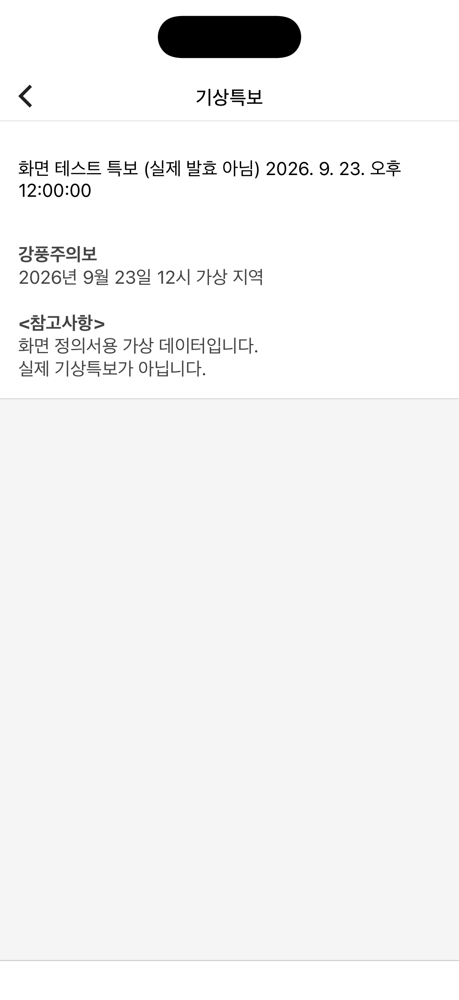
S12 · Weather bulletiniPhone 17 Pro · iOS 26.5
screenshot-special.json